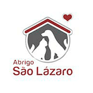

GOVERNADOR DO ESTADO DO CEARÁ
Camilo Sobreira de Santana
VICE-GOVERNADORA DO ESTADO DO CEARÁ
Maria Izolda Cela de Arruda Coelho
SECRETÁRIO DO MEIO AMBIENTE
Artur José Vieira Bruno
SECRETÁRIO EXECUTIVO
Fernando Faria Bezerra
SECRETÁRIA DE PLANEJAMENTO E GESTÃO INTERNA
Maria Dias Cavalcante
COORDENADOR DE EDUCAÇÃO AMBIENTAL
Ulisses José de Lavor Rolim
EQUIPE TÉCNICA DE ELABORAÇÃO
Milton Alves de Oliveira
Sérgio Augusto Carvalhedo Mota
Ulisses José de Lavor Rolim
FICHA CATALOGRÁFICA
Ceará. Secretaria Estadual do Meio Ambiente
Abandono também é uma forma de violência / Secretaria
Estadual do Meio Ambiente - Fortaleza: Sema/2019
10p. il
1. Educação Ambiental. 2. Abandono de animais. 3. Guarda
Responsável. 4. Adoção de animais. 5. Preservação Ambiental
1. Título
CDU 37: 504
NÃO ABANDONE QUEM NUNCA
ABANDONARÁ VOCÊ
Apresentação
A Secretaria Estadual do Meio Ambiente - SEMA - tem a missão
de promover a defesa do meio ambiente, bem como formular, planejar e
coordenar a política ambiental do estado do Ceará de forma participativa e
integrada em todos os níveis de governo e sociedade.
Esta cartilha é resultado do trabalho coletivo entre o poder público
e os grupos de proteção animal para enfrentar um problema frequente nas
cidades: o abandono de animais domésticos.
O abandono é mais do que um crime ambiental: é um ato de
crueldade contra a vida. Os animais abandonados sofrem com sede, fome,
doenças e maus-tratos nas ruas, praças e parques. Além disso, podem
causar uma série de problemas ambientais e de saúde pública.
Ciente dessa situação, a SEMA acredita que, através da educação
e da união entre governo e sociedade, os animais domésticos terão a
oportunidade de ter uma vida digna, repleta de carinho e de companheirismo
ao lado dos seres humanos.
Secretaria Estadual do Meio Ambiente
CUIDAR DOS ANIMAIS É UM ATO
RECÍPROCO DE AMOR E AMIZADE
Os animais domésticos são seres puros e sensíveis, fiéis
companheiros para uma vida inteira. Eles nos proporcionam momentos
inesquecíveis, repletos de muita alegria e amor. Assim como nós, eles
representam a maravilha da experiência da vida no planeta.
Ao contrário do que algumas pessoas pensam, os animais possuem
sentimentos. Eles sentem tristeza, alegria, saudade, solidão e amor. Eles
têm consciência de tudo que ocorre ao seu redor. Por isso, eles dependem
do nosso cuidado para serem felizes.
E nós compartilhamos esses sentimentos. Quando eles sentem
dor, nós sofremos com eles. Quando vemos um animal expressando
alegria, nós repartimos com eles essa alegria. Quem nunca sorriu ao ver
um cachorrinho ou um gatinho rolando no chão ou passeando na janela do
carro? Estamos todos em sintonia.
ABANDONAR NÃO É LEGAL
Basta observar as crianças para vermos que é parte da nossa
natureza sermos bondosos com os animais. Mesmo assim, ainda existem
muitos cães e gatos abandonados em nossa cidade. Eles vivem em
condições precárias, passando fome, sede e sofrendo de doenças e maus-
tratos. Na maioria das vezes, eles acabam morrendo, pois não conseguem
sobreviver sem os cuidados humanos.
Os principais motivos para o abandono são:
* Crias indesejadas;
* Mudança de residência;
* Longas viagens;
* Doenças;
* Velhice.
Abandonar um animal, além de ser um ato de crueldade,
É UM CRIME, de acordo com a Lei de Crimes Ambientais (Lei Federal n°.
9.605, de 1998):
"Art. 32 Praticar ato de abuso, maus-tratos, ferir ou mutilar animais
silvestres, domésticos ou domesticados, nativos ou exóticos:
Pena - detenção, de três meses a um ano, e multa.
§ 1º Incorre nas mesmas penas quem realiza experiência dolorosa ou
cruel em animal vivo, ainda que para fins didáticos ou científicos, quando
existirem recursos alternativos.
§ 2º A pena é aumentada de um sexto a um terço, se ocorre morte do animal."
ABANDONO NOS PARQUES
As Unidades de Conservação são áreas criadas com o objetivo
de preservar e proteger um ecossistema natural de grande importância,
fragilidade ou beleza. Elas têm o objetivo de resguardar as espécies da fauna
e da flora nativas de uma determinada região, garantindo as condições
necessárias para o seu equilíbrio ecológico.
Dentre as diversas categorias das Unidades de Conservação,
temos os parques. "Os parques têm como objetivo básico a preservação
de ecossistemas naturais de grande relevância ecológica e beleza cênica,
possibilitando a realização de pesquisas científicas e o desenvolvimento de
atividades de educação e interpretação ambiental, de recreação em contato
com a natureza e de turismo ecológico" (Lei Federal 9.985/00 - SNUC).
O estado do Ceará possui diversos parques, dentre eles o Parque Estadual
do Cocó, em Fortaleza, e o Parque Estadual Botânico do Ceará, em Caucaia.
Eles foram criados para proteger a natureza, mas estão sofrendo com o
problema do abandono de animais. Ajude a proteger o meio ambiente. Não
abandone animais nos parques!
Os cães e os gatos são animais domésticos e não pertencem a
esses ambientes. Se eles forem abandonados, não conseguirão sobreviver
sozinhos, pois dependem dos cuidados dos seres humanos.
Além disso, abandoná-los nos parques pode prejudicar o trabalho
de conservação e proteção das espécies nativas. A inserção de espécies
exóticas, ou seja, que não pertencem àquele ecossistema, pode causar
uma série de problemas ambientais, tais como:
* Desequilíbrio ecológico - os animais abandonados competem
por espaço e comida com os animais silvestres;
* Transmissão de doenças - pode ocorrer a transmissão de
doenças entre os animais abandonados e os silvestres;
* Reprodução descontrolada - os animais abandonados se
reproduzem sem controle, aumentando o problema com o
passar do tempo;
* Sujeira - eles reviram latas de lixo em busca de alimentos e fazem
suas necessidades fisiológicas, poluindo as áreas protegidas.
EXEMPLO DA REPRODUÇÃO
DESCONTROLADA

Veja alguns cuidados que devem ser tomados dentro e no entorno dos parques
em relação aos animais:
* Verifique se é permitida a entrada com animais domésticos;
* Não alimente os animais silvestres;
* Recolha todo o seu lixo;
* Se encontrar um animal abandonado ou ferido, avise aos
funcionários do parque;
* Denuncie maus-tratos e abandono de animais à polícia.
ADOTE UM AMIGO
Existem muitos animais que estão à espera de alguém que lhes
dê carinho e atenção. Muitos sofreram maus-tratos nas ruas, passaram
fome e nunca tiveram um amigo de verdade, uma oportunidade de amar
e ser amado por uma família.
Adotar um animal abandonado é um ato de amor e cidadania.
ONGs e grupos de proteção animal ajudam a encaminhá-los para novos
lares. Informe-se nos sites das organizações como adotar um bichinho.
Assim, além de você ganhar um novo amigo, dará oportunidade de uma
vida melhor para ele.
FIQUE ATENTO ÀS FEIRAS DE ADOÇÃO DE ANIMAIS NA SUA CIDADE!
Guarda Responsável
Ao adquirir um animal, seja adotado ou não, é preciso ter consciência
de que ele está sob sua responsabilidade e de que suas necessidades
básicas precisam ser atendidas.
Os cães e gatos vivem em média 15 anos. Durante todo esse tempo,
você precisa considerar a presença deles na família, tanto nas despesas
financeiras da casa como nas tomadas de decisão, por exemplo, na
mudança de moradia ou longas viagens.
Para que seu bichinho seja feliz e saudável, você deve tomar alguns cuidados:
* Esterilize seu animal de estimação: também conhecida como
castração, é a forma mais eficaz de evitar crias indesejadas.
A cirurgia é muito simples, de baixíssimo risco, feita por um
médico veterinário e não causa nenhuma dor ou malefício ao
animal. Pelo contrário, evita diversas doenças graves, como
tumores e infecções. Além disso, evita o estresse em animais
muito agitados por conta do período de cio. Esterilizando o seu
animal, você previne que ele tenha descendentes que venham
parar nas ruas, abandonados. O controle de natalidade é necessário e urgente!
* Vacine regularmente: os filhotes precisam tomar 3 doses das vacinas
para ficarem totalmente imunizados. Quando já adultos, os reforços
das vacinas são anuais. Existem doenças fatais que os animais não
imunizados podem adquirir até mesmo num passeio diário. Vacine
seu cão ou gato contra as principais viroses anualmente!
* Vermifugue a cada 6 meses: os vermes podem causar falta de
apetite, tristeza, emagrecimento e atrapalham o crescimento
do seu bichinho. Em alguns casos, podem levar até mesmo à morte.
* Não deixe seu animal sair sozinho na rua: além do risco de
atropelamentos, maus-tratos e contágio de doenças, ele pode
se perder e não voltar mais para casa. Dica: use plaquinhas
de identificação na coleira do seu bichinho (nome e telefone) e
dedique tempo para passear com ele diariamente.
* Mantenha o ambiente sempre limpo: não deixe fezes nem urina
expostas e mantenha a higiene do seu amigo de 4 patas. A sujeira
pode trazer diversas doenças, como o calazar. Os carrapatos e
os mosquitos se proliferam nesses ambientes.
* Tele a sua janela: é recomendado para quem mora em
apartamento, pois evita fugas e acidentes.
Procure um veterinário: caso seu amigo felino ou canino
apresente algum problema de saúde, como emagrecimento,
falta de apetite, tristeza, ou até mesmo mudanças bruscas
de comportamento, pode ser sinal de que ele não está se
sentindo bem e está sofrendo. Seu amigo não sabe falar, mas
você pode compreendê-lo ao observar bem suas atitudes. Ao
sinal de qualquer anormalidade, procure imediatamente ajuda
veterinária. Quanto mais cedo, maior a chance de recuperação do seu amigo.
* Dê atenção ao seu amigo: brinque, passeie, dê carinho.
Os animais precisam de muito amor. Com certeza ele retribuirá tudo isso!
Perguntas frequentes
"Para quem eu denuncio maus-tratos a animais?"
Ao se deparar com situações de maus-tratos, procure ajuda policial. Você pode
fazer a denúncia em qualquer Delegacia de Polícia ou discando 190. No Ceará,
o BPMA-Batalhão de Polícia de Meio Ambiente faz o trabalho de averiguação
de denúncias. Em Fortaleza e Região Metropolitana, a DPMA - Delegacia de
Proteção ao Meio Ambiente presta esse serviço.
"Posso alimentar um animal abandonado?"
Sim. Animais abandonados passam dias sem se alimentar ou beber água.
Mas é importante não oferecer qualquer tipo de alimento: ração é sempre o
alimento recomendado, visto que não oferece risco na ingestão e ainda ajuda a
não sujar as ruas e locais públicos. Se o animal estiver em um parque ou área
protegida, procure os funcionários ou os pontos próprios de alimentação.
"Como faço para adotar um bichinho?"
Existem muitos animais nas ruas à espera de uma chance. Muitos deles são
resgatados por ONGs ou grupos de proteção de animal, recebem tratamento
adequado, são vacinados, esterilizados e estão à espera de adoção. Procure
alguma dessas instituições e informe-se.
"Se eu não puder mais criar um animal, o que eu faço?"
Procure doá-lo para uma pessoa de sua confiança, que possa oferecer uma
vida digna e cuidar do animal. Caso tenha dificuldade de encontrar essa pessoa,
procure as instituições de proteção animal de sua cidade. Lembre-se: nunca abandone um animal!
"Como faço para participar de grupos de proteção animal?"
O trabalho de proteção animal é totalmente voluntário e está sempre precisando
de pessoas sensíveis à causa animal para que o trabalho continue crescendo
e mais animais possam ser ajudados. Procure alguma das instituições de
proteção animal da sua cidade e informe-se como ajudar a salvar vidas. Toda ajuda é sempre muito bem-vinda!
TELEFONE ÚTEIS
* Secretaria Estadual do Meio Ambiente (SEMA) - (85) 3101-1234
* Batalhão de Polícia de Meio Ambiente (BPMA) - 190
* Delegacia de Proteção ao Meio Ambiente (DPMA) - (85) 3247-2630
*(apenas capital e região metropolitana)
* Unidade Hospitalar Veterinária da UECE - (85) 3101-9834 / 3101-9847
* Coordenadoria Especial de Proteção e Bem-Estar Animal de Fortaleza
(COEPA) - (85) 3272-3356
- Centro de Zoonoses de Fortaleza - (85) 3131-7846 / 3131-7849
* Parque Estadual do Cocó - (85) 3234-3574
* Parque Estadual Botânico do Ceará - (85) 3368-9452
PARCEIROS NA PROTEÇÃO DOS ANIMAIS NO CEARÁ
* Abrigo São Lázaro (@abrigosaolazaro) - Fortaleza
* ONG ABRACE (@ong.abrace) - Fortaleza
* ONG Deixa Viver (@ongdeixaviver) - Fortaleza
* Grupo de Apoio ao Bem-Estar Animal - GABA (@gabafortal) - Fortaleza
* UPAC - União Protetora dos Animais Carentes (@upacfortaleza)
* Associação Viva Bicho (@avivabicho)
* Abrigo Nosso Lar (facebook.com/amigosdoabrigonossolar)
* APATA - Associação Protetora dos Animais para Tratamento e Adoção
(@apata_ _ceara)
* ONG INPAMA (@ong_inpama) - Caucaia
* ONG Amigos de 4 Patas (@amigosde4patasipuce) - Ipu
* ONG Adota Iguatu (@ongadotaiguatu) - Iguatu
AJUDE O GATINHO A ENCONTRAR UM LAR!
